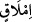

3. “Fakirlik sebebiyle çocuklarınızı öldürmeyin.” Kızlarınızı diri diri toprağa
gömmeyin.
(
) “fakirlik”, azığın ve nafakanın tükenmesidir. Bu kelimenin kökü olan (
)
istediğini elde edebilmek için bütün gayretini sarfetmek demektir.
“Sizi de onları da biz rızıklandırırız,” siz değil. Şu halde rızkı elde etmekteki
acizliğinizden ötürü fakir düşmekten korkmayın.
On hükümden üçüncüsü budur. Çocukların öldürülmesinin haram kılınması, Allah’ın
bina ettiğini yıkmak anlamına geldiği içindir. Allah’ın bina ettiğini yıkan ise
lanetlenmiştir. Esasen bu, kendi meyvesini ve ürününü yok etmek, neslini kurutmaktır.
Rızık konusunda Allah’a tevekkülü terk etmek, insanı Allah Teâlâ’yı yalanlamaya
götürür. Çünkü O şöyle buyurmuştur: “Yeryüzünde hiçbir canlı yoktur ki, rızkı
Allah’a ait olmasın.” (Hûd, 11/6)
Biz fakr ve kanaat şerefini bırakmayız
Padişaha söyle, rızık mukadderdir
“Kötülüklerin açığına da gizlisine de yaklaşmayın.” Yani zinaya yaklaşmayın.
“Kötülükler” şeklinde çoğul gelmesi, bütün çeşitlerini yasaklamak maksadıyladır.
4. Zinanın açık olanı, bazı aşağılık kimselerin âdeti üzere açıkça belirli yerlerde
yapılanıdır. Gizli olanı ise kendilerini soylu gören kimselerin âdeti üzere kadınlardan
dost (metres) edinerek gizlice yapılanıdır.
Bu da, on hükümden dördüncüsüdür. Zinâya yaklaşmanın yasaklanması, onun
mübalağa ile yasaklandığını ifade etmek içindir. Burada yaklaşılmaması emredilen
kötülüklere, kişiyi cennetten uzaklaştıran ve cehenneme yaklaştıran fiiller dahildir. Bu,
açık olan kötülükler ve zinâdır. Kişiyi cennetten uzaklaştırmasa ve perdelemese de
Hak’dan uzaklaştıran ve perdeleyen fiiller buna dâhildir. Bunlar ise gizli olan
kötülükler ve zinâdır. Açık olan zina bilfiil olan, gizli zinâ ise niyetle olandır. Göz
zinası da, zinadan sayılır.
Uzaktan nazar bir ok, bir zehir gibidir
Aşkın artar, sabrın azalır
İbn Abbas (r. anhüma)’dan rivayet edilmiştir: “Şeytan bir erkeğe üç yerinden nüfûz
eder: Gözleri, kalbi ve tenâsül uzvu. Bir kadına da üç yerinden sirayet eder: Gözleri,
kalbi ve avret mahalli.”
5. “Haksız yere Allah’ın yasakladığı cana kıymayın.” Masum bir müslümanı ya da
sizden eman almış olan zimmiyi haksız yere öldürmeyin. Ancak harbî bunun dışındadır.
“Haksız yere” ifadesi, vaki olabilecek bütün hallerden istisnadır. Hiçbir durumda
cana kıymayın. Ancak şeriatın öldürmeyi emrettiği hak olan durum müstesna. Bu ise
îman ettikten sonra küfre dönmek, evlendikten sonra zina etmek ve masum bir cana